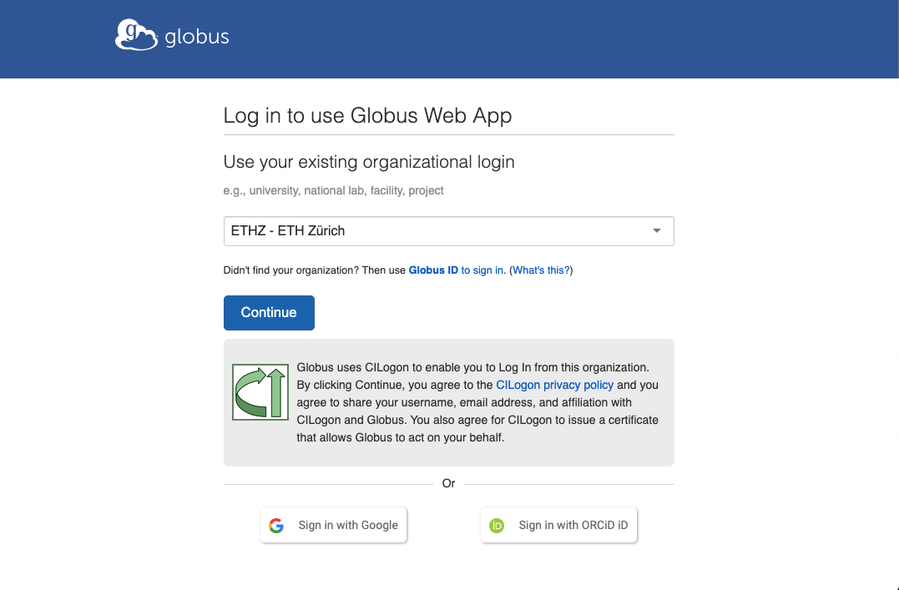
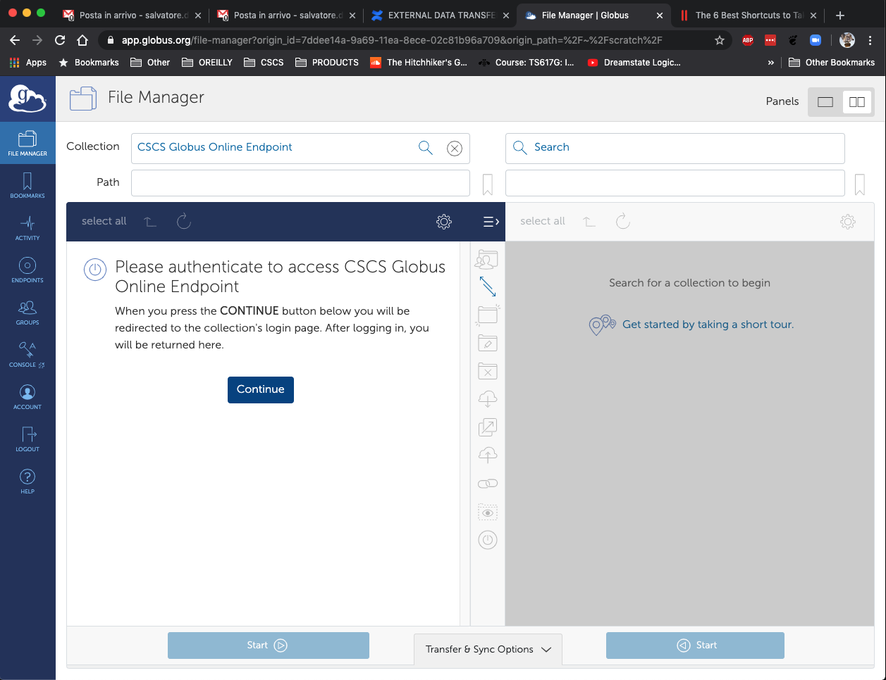

Data Transfer¶
External Transfer¶
CSCS currently offers the CSCS Globus online endpoint for uploading and downloading data from and to CSCS:
The recommended way to transfer data externally occurs via the CSCS globus-online endpoint.
- Follow the official get started documentation to login
- in case you don't have an organisation account, you can just use the option "Sign in with Google" 
- Use the file manager to search for an endpoint typing "CSCS"
- Please make sure that the login page belongs to the cscs.ch domain (shown in the URL)
- The CSCS endpoint requires authentication, therefore use your CSCS credentials to log in 
- Once logged in, you can trasfer data to and from CSCS.
- if you want to transfer the data to another endpoint, just search for it and transfer the data
- if you want to download the data to your local system, you will need the Globus Connect Personal client: the client will turn your local system into an endpoint, so you will be able to select it and transfer the data.
For more information about Globus Connect Personal, please read the official Frequently Asked Questions.
Currently Globus provide the following mount points at CSCS:
| Mount Point | Description |
|---|---|
/scratch/snx3000 |
old Daint scratch area |
/store |
old Daint store area |
/project |
old Daint project area |
/users |
old Daint home directory |
/scratch/shared |
old Scratch-Shared area ( old meteoswiss clusters ) |
/iopsstor/scratch/cscs |
Mounted on Clariden |
/capstor/scratch/cscs |
New Alps Daint scratch area |
/capstor/store/cscs |
New Alps Daint store area |
/capstor/users/cscs |
Home directory for Bristen/Scopi/Errigal |
/vast/users/cscs |
New Alps vclustewrs home directory ( Alps Daint and others ) |
Internal Transfer¶
The Slurm queue xfer is available on Piz Daint (Cray XC) and daint.alps to address data transfers between internal CSCS file systems.
The queue has been created to transfer files and folders from /users, /project, /store or /capstor/store to the /capstor/scratch and /scratch file systems (stage-in) and vice versa (stage-out).
Currently the following commands are available on the cluster supporting the queue xfer:
You can adjust the Slurm batch script below to transfer your input data on $SCRATCH, setting the variable command to the unix command that you intend to use, choosing from the list given above:
#!/bin/bash -l
#
#SBATCH --time=02:00:00
#SBATCH --ntasks=1
#SBATCH --partition=xfer
command="rsync -av"
echo -e "$SLURM_JOB_NAME started on $(date):\n $command $1 $2\n"
srun -n $SLURM_NTASKS $command $1 $2
echo -e "$SLURM_JOB_NAME finished on $(date)\n"
if [ -n "$3" ]; then
# unset memory constraint enabled on xfer partition
unset SLURM_MEM_PER_CPU
# submit job with dependency
sbatch --dependency=afterok:$SLURM_JOB_ID $3
fi
The template Slurm batch script above requires at least two command line arguments, which are the source and the destination files (or folders) to be copied.
The stage script may take as third command line argument the name of the production Slurm batch script to be submitted after the stage job: the Slurm dependency flag --dependency=afterok:$SLURM_JOB_ID ensures that the production job can begin execution only after the stage job has successfully executed (i.e. ran to completion with an exit code of zero).
You can submit the stage job with a meaningful job name as below:
# stage-in and production jobs
$ sbatch --job-name=stage_in stage.sbatch \
${PROJECT}/<source> ${SCRATCH}/<destination> \
production.sbatch
The Slurm flag --job-name will set the name of the stage job that will be printed in the Slurm output file: the latter is by default the file slurm-${SLURM_JOB_ID}.out, unless you set a specific name for output and error using the Slurm flags -e/--error and/or -o/--output (e.g.: -o %j.out -e %j.err, where the Slurm symbol %j will be replaced by $SLURM_JOB_ID).
l
The stage script will also submit the Slurm batch script production.sbatch given as third command line argument.
The production script can submit in turn a stage job to transfer the results back. E.g.: